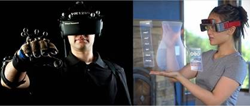
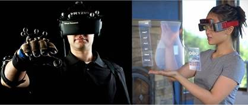
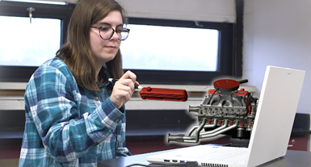

Beyond the Screens: Into Reality
What started as 3D in computer graphics has extended beyond the screens into the physical world with the emergence of augmented reality (AR) and virtual reality (VR). They connect the virtual environment with our real world. Recently, AR and VR have become more widely used in the healthcare and education sectors, no longer just for gamers.
The global AR/VR market is projected to
reach $46.6 billion in 2025 and could grow to over $220.99 billion by 2034. The
rising demand for content management systems, all over the world, is driving
the growth of the AR/VR software market. It was the AR software segment that
dominated the market with the largest shares in the year 2024.
Did you know?
AR technology is used in Pokemon GO.
In this application, users can gather points by exploring real-world
environments while holding up their smartphone in an attempt to locate, capture
"Pokemon," which are connected to particular geographic locations.
Augmented reality (AR)
overlays the digital elements onto the real world, allowing us to interact with
it in a more natural way. With AR, Google lets us see a variety of creatures,
such as dogs and lions. Snapchat uses augmented reality to provide filters
and effects while taking pictures.
Superimposition-based AR partially or even fully replaces the original view of
the object with an augmented view of the same object. It is very suitable for
those who use their smartphone to experience an augmented version.
Virtual reality (VR)
takes the users into a digital environment, generating a fully artificial
experience with the users cut off from the real world. With VR technology, we
can create a virtual environment where users may play games or view movies. VR
devices such as the Oculus Rift allow users to imitate the digital environment.
With the help of a smartphone app called Google Tilt Brush, users can create 3D
artwork in a virtual setting.
When it comes to selecting VR devices, the main importance is to select a
device that is user-friendly, i.e. comfortable to wear, flexible in operations,
and the viewing depth and visual experience has to provide a dynamic experience
for the user.
 

Reality in the Making: Augmented Reality Vs Virtual Reality
Did you know?
Tuscany+ was the first tourism-specific app, designed to enhance visitor experiences using AR.
Unlike VR, which requires a headset, AR is more user-friendly and accessible, as it can be used on smartphones.
Tracking sensors are essential to allow the user to roam in a real environment in order to move their viewpoint in AR/VR and be able to continuously update the location of the user in the virtual world. There are three major concepts involved in tracking the user: Six Degrees of Freedom (to detect the movement of a rigid body in 3D space), orientation, and coordinates of the object.
- In education, AR is being primarily used to create an interactive and engaging classroom environment for the students.
- In gaming, VR takes the top spot. Along with VR headsets, input devices like joysticks and bend-sensing gloves that track the user’s hand gestures and track their position in the real environment to translate them into a virtual environment are being used. However, the output devices allow the user to see and hear everything that happens in the game. Games like Asgard’s Wrath are often played using Meta VR headsets.
- Brands like IKEA and Amazon are leveraging their AR marketing campaign, allowing customers to try out their products before purchasing them.
· NASA uses AR and VR technologies to train their astronauts to take a walk on Mars.
· The best thing about VR in the medical field, is that using exposure therapies by a company called LIMBIX people have overcome anxiety and claustrophobia.
"Mixed reality is the third wave of computing after the personal computer and the smartphone."- Satya Nadella, CEO, Microsoft
Mixed reality (MR) is the merge of both AR and VR. MR allows us to bring the virtual elements into real world. One example of this is zSpace, an educational technology organization that uses MR for educational purposes. zSpace uses a monitor, a stylus, and special 3D glasses, using which the users can manipulate virtual components as they appear to pop out of the screen.

Students improve their understanding of the subjects with the help of Mixed Reality (MR).
The major hurdles to overcome in the use of AR and VR are the cost of the VR headsets, motion sickness while using VR headsets, and privacy. AR and VR track the user’s real-time position in the environment, raising questions about privacy.
Kois Center VR is currenly working on developing an application that provides VR-based training for dental professionals through hyper-realistic virtual procedures. Samsung’s Project Moohan XR headset is launching globally in October 2025. It blends augmented, virtual, and mixed reality on Android XR platform. This super cool gadget has lot of expectations in the tech community.
The Age of Immersive Technology:
AR and VR are not just trends, they build
the prototype for how our future will connect to the world. There is hardly an
area from education to gaming where the horizon for developing those
applications does not seem limitless. Hence, when costs do come down and access
increases, it is expected that, like every other aspect of our everyday life,
AR and VR will basically change how we learn and work and play. We will soon
see mixed reality, which is the integration of AR and VR, assisted with 5G
support for infusing real-time interactions lag-free to provide the best of
both worlds.
Written by: Akhshaiya S - 2023105507
[ECE]
References:
AR VR Software Market Size to Hit USD 220.99 Bn by 2034
The
Role of AR and VR Technologies in Education Developments: Opportunities and
Challenges | IEEE Conference Publication | IEEE Xplore
Research
opportunities on virtual reality and augmented reality: a survey | IEEE
Conference Publication | IEEE Xplore